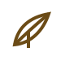
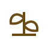
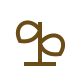

Holzis HoneyImkerei aus Leidenschaft
Mit Liebe zu den Bienen. Mit Herz für die Natur.
Mit Liebe zu den Bienen.
Mit Herz für die Natur.
Unsere kleine Imkerei steht für natürlichen, regionalen Honig und nachhaltige Bienenhaltung.
Mehr über uns
Aus unserer Umgebung.

Ohne Zusätze.
Mit Herz für die Bienen.

Im Einklang mit der Natur.
Unsere kleine Imkerei.